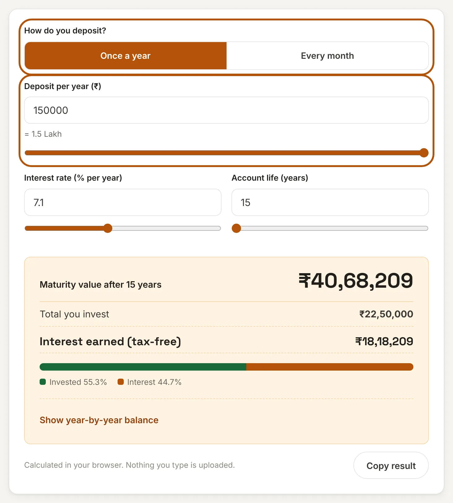
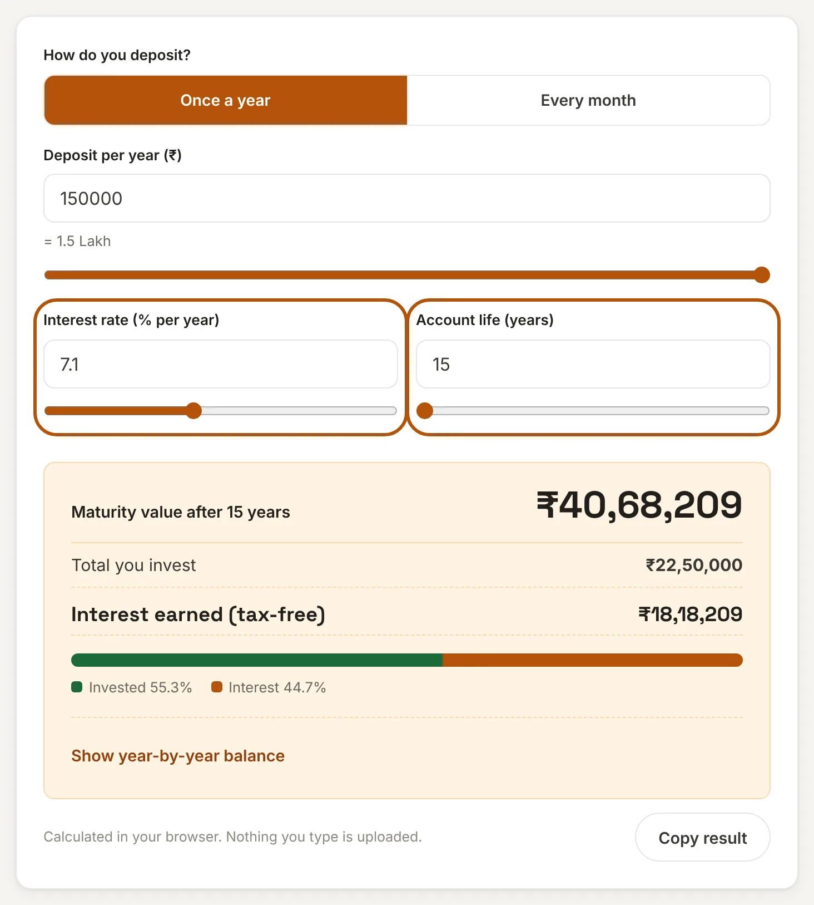
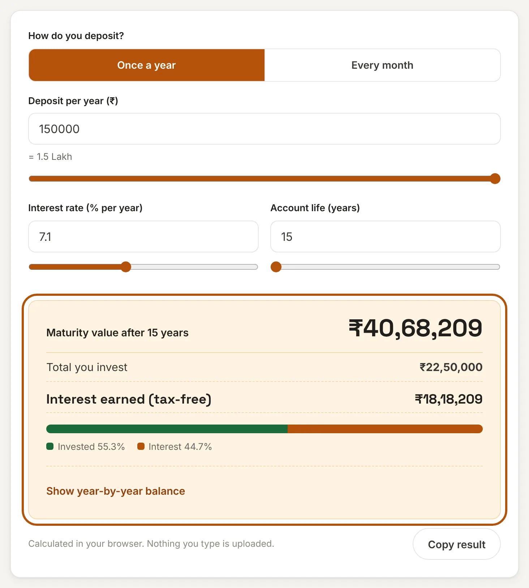
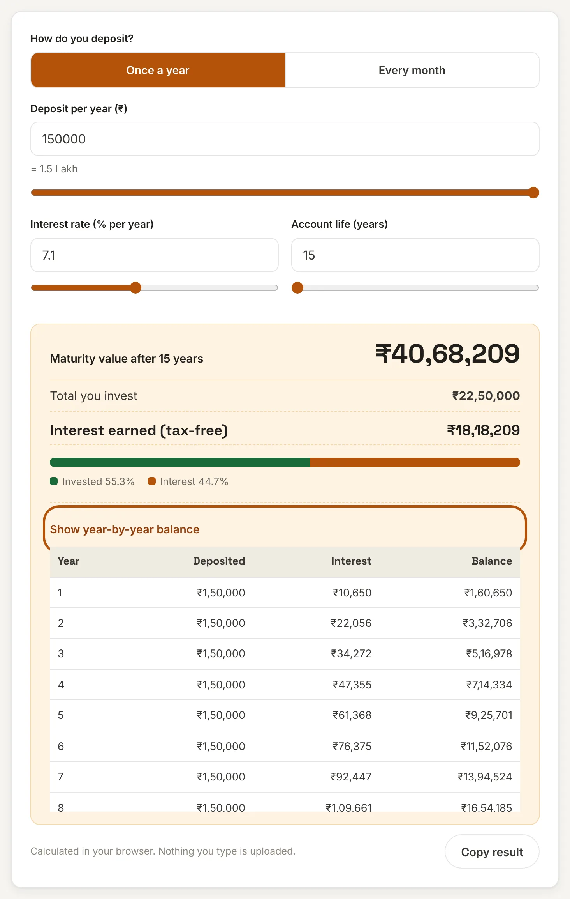

What is a PPF calculator?
The Public Provident Fund (PPF) is a government-backed savings scheme in India. You put money in for at least 15 years, the government sets an interest rate, and both the interest and the final amount are tax-free. People use it for retirement, a child's education or simply a safe, long-term nest egg.
Working out what a PPF account will be worth is harder than it looks, because interest is calculated every month but added to your balance only once a year, and the date you deposit matters. This PPF calculator does that work for you. Enter what you plan to deposit, the interest rate and how many years you will keep the account, and it shows the maturity value, the interest you earn and the balance at the end of every year.
How to use this PPF calculator
It takes four quick steps and no sign-up.
Step 1: Choose how you deposit and how much
Pick Once a year if you put the full amount in at the start of the financial year, or Every month if you deposit a fixed instalment each month. Then enter the amount. The yearly limit is ₹1,50,000, so the monthly limit is ₹12,500. You can type the amount or drag the slider.

Step 2: Set the interest rate and account life
The rate is already filled in with the current PPF rate of 7.1%. Change it if the government revises it or if you want to test another figure. The account life starts at 15 years, the minimum lock-in, and goes up in 5-year steps to 50 years.

Step 3: Read the result
The result updates as you type. You see the maturity value, the total you invested and the interest you earned. The bar shows how much of the final amount is your own money and how much is interest.

Step 4: Check the year-by-year balance
Open Show year-by-year balance to see what you deposit, what interest is added and what the balance is at the end of each year. Use Copy result to save a one-line summary.

How PPF interest works
Three rules decide how much you earn:
- Interest is worked out every month on the lowest balance between the 5th and the last day of that month. Money deposited by the 5th earns interest for that month.
- The interest is added to your account once a year, at the end of March. That is when it starts earning interest itself.
- The rate is set by the government and reviewed every quarter. This page uses 7.1%, the rate announced for October to December 2026. Check the latest rate before you decide anything.
If you deposit the full year's amount by 5 April, every one of the 12 months earns interest, so the yearly formula is simple:
With monthly deposits, each instalment earns interest only for the months it has been in the account, so the calculator adds the interest month by month and credits it at year end.
Worked examples
All figures assume 7.1% for the whole period and deposits made by the 5th.
| Deposit | Years | You invest | Maturity value |
|---|---|---|---|
| ₹50,000 a year | 15 | ₹7,50,000 | ₹13,56,070 |
| ₹1,00,000 a year | 15 | ₹15,00,000 | ₹27,12,139 |
| ₹1,50,000 a year | 15 | ₹22,50,000 | ₹40,68,209 |
| ₹1,50,000 a year | 20 | ₹30,00,000 | ₹66,58,288 |
| ₹1,50,000 a year | 25 | ₹37,50,000 | ₹1,03,08,015 |
| ₹12,500 a month | 15 | ₹22,50,000 | ₹39,44,599 |
Look at the last two rows of the 15-year results. The same ₹22,50,000 gives ₹40,68,209 when deposited once a year but ₹39,44,599 when deposited monthly, a difference of about ₹1.24 lakh. The yearly deposit wins because the money works for all 12 months from the first day of the year.
Why time matters more than the amount
PPF rewards patience. With ₹1,50,000 a year, the balance is ₹9.26 lakh after 5 years and ₹22.30 lakh after 10 years, but ₹40.68 lakh after 15. In year 15 alone the account earns about ₹2.70 lakh in interest, which is more than the ₹1.5 lakh you deposit that year. Extending from 15 to 20 years nearly adds ₹26 lakh, from a further ₹7.5 lakh of deposits. That is the compounding effect, and it is why stopping early costs so much.
PPF rules at a glance
| Rule | Detail |
|---|---|
| Yearly deposit | ₹500 minimum, ₹1,50,000 maximum per financial year, in multiples of ₹50 |
| Lock-in | 15 financial years from the end of the year you opened the account |
| After 15 years | Close it, keep it without new deposits, or extend with deposits in 5-year blocks |
| Partial withdrawal | Allowed from the 7th financial year, once a year, up to 50% of an earlier balance |
| Tax | Interest and maturity amount are tax-free; deposits qualify under Section 80C in the old tax regime |
Rules and rates change, so confirm the details with your bank or post office before you invest. This calculator does not model withdrawals or changes in the rate.
Frequently asked questions
What is the current PPF interest rate?
It is 7.1% a year for October to December 2026, unchanged from the previous quarter. The government reviews it every quarter, so check the latest rate before you plan.
Is the PPF maturity amount taxable?
No. The interest you earn and the amount you get at maturity are tax-free. Deposits up to ₹1.5 lakh a year can be claimed under Section 80C if you use the old tax regime.
What is the best time of the year to deposit in PPF?
As early as possible, by the 5th of April. Interest is calculated on the lowest balance between the 5th and month end, so a deposit made by the 5th of April earns interest for all 12 months of the year.
Can I deposit more than ₹1.5 lakh in a year?
No. The limit is ₹1,50,000 per financial year, counted together across your own account and any minor's account you operate. Anything above that earns no interest and is returned.
What happens when my PPF account matures after 15 years?
You can close it and withdraw everything, keep it open without new deposits so it still earns interest, or extend it with deposits in blocks of 5 years. To extend with deposits you must apply within one year of maturity.
Is my data sent to a server?
No. This tool runs entirely in your browser. What you enter is never uploaded or stored.
Disclaimer: This tool gives estimates for convenience and is not financial, tax or legal advice. Actual interest is rounded by the bank or post office and the rate may change. See our disclaimer.